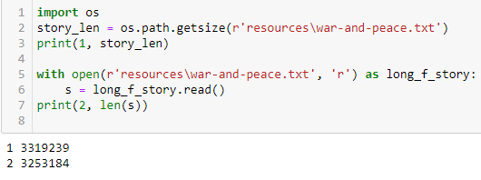

מה אמת המידה לביצוע של התרגיל הזה?
יבאתי מודול כדי לפתור משהו שהיה נראה מסורבל בקוד של שבוע 4, אבל הלוגיקה לא השתנתה - זה סבבה?
כן. יש הרבה פתרונות
הפתרון המיטבי להערכתי אמור לקחת 4–5 שורות
{kind=link}
פתרון מיטיבי קרי - למצוא את המודול המתאים 
הצלחתי ב-8 שורות. מת לדעת איך אפשר לקצר יותר מזה…
האם יש הנחיות מסוימות לאיך הקלט צריך להיראות במדויק, או פשוט להדפיס את ה-10 שמופיעות הכי הרבה?
(כלומר, שורה-שורה למשל או הצגה חופשית)
בדיוק כמו בשבוע שעבר, אגב למדנו את פונקציית enumerate, אז אולי יהיה נחמד להשתמש בה😃
זה כולל הורדת “מסיחים” ושאר מרעים?
קרי, התעלמות מאות גדולה.קטנה וממילים-מחוברות-ככה או, או (או) וכיוצא בזה… 
אם תרצה להגיע לאותה התוצאה אז כן, אבל עכשיו יש בידנו כלים חדשים לעשות זאת ביעילות
פתרון מיטבי בלי re? כי הצלחתי ב-5 שורות רק עם re
כן, אני גם אשמח לתשובה של רותי. עם שימוש במודולים שמצאתי, לא הצלחתי להגיע ל5 שורות ו-גם להגיע למספר האמיתי של מופעים בטקסט.
כן, אתם יותר פרפקציוניסטים מהרגיל (: הכוונה היא לפתרון של 4–5 שורות בלי לנקות את הטקסט באופן מושלם
2 לייקים
הספירה כוללת את פתיחת הקובץ ואת ההדפסות של ה10 הנפוצות ביותר?
או 4-5 שורות ל"לב" של הספירה?
שאלה פחות קשורה…  אבל מתוך התרגיל
אבל מתוך התרגיל
למה הם לא נותנים את אותו אורך

יצא לי 5 שורות, אבל בלי להתייחס למילים שצמודות לתווים מיוחדים (!,.") וכו’… זה בסדר?
אותיות בעברית כדי שיוזח ימינה
getsize מחזיר גודל של קובץ ב-bytes
לעומת ה-len שמחזיר כמות תווים בקובץ.
וכהמשך שאלה לים או כל אחד שיודע, איך אני דואג שיתיישר לימין כמו שצריך פה כשאני כותב באנגלית ובעברית? ראיתי פעם תשובה אבל לא מוצא עכשיו בחיפוש בפורום
לייק 1
תתחיל את המשפט באות עברית
אפשר גם ב 3 שורות קוד
לייק 1
@ofirp
הצלחת ב-3 שורות עם לעשות ניקוי ולו חלקי? כי אני מצליחה ב-3 רק אם אני מתעלמת מהצורך לנקות את כל סימני הפיסוק למיניהם
אפשר לדעתי גם עם ניקיון בשורה מאוד ארוכה להישאר עם 3 שורות קוד אבל סתם מכוער ומיותר אז לא ניסיתי